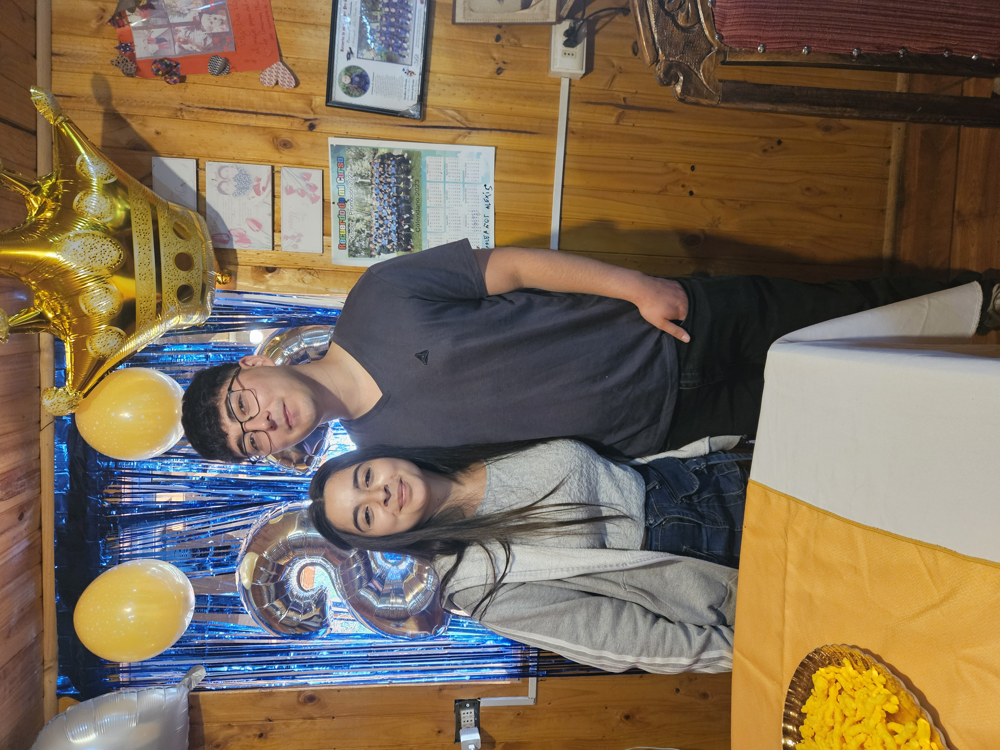
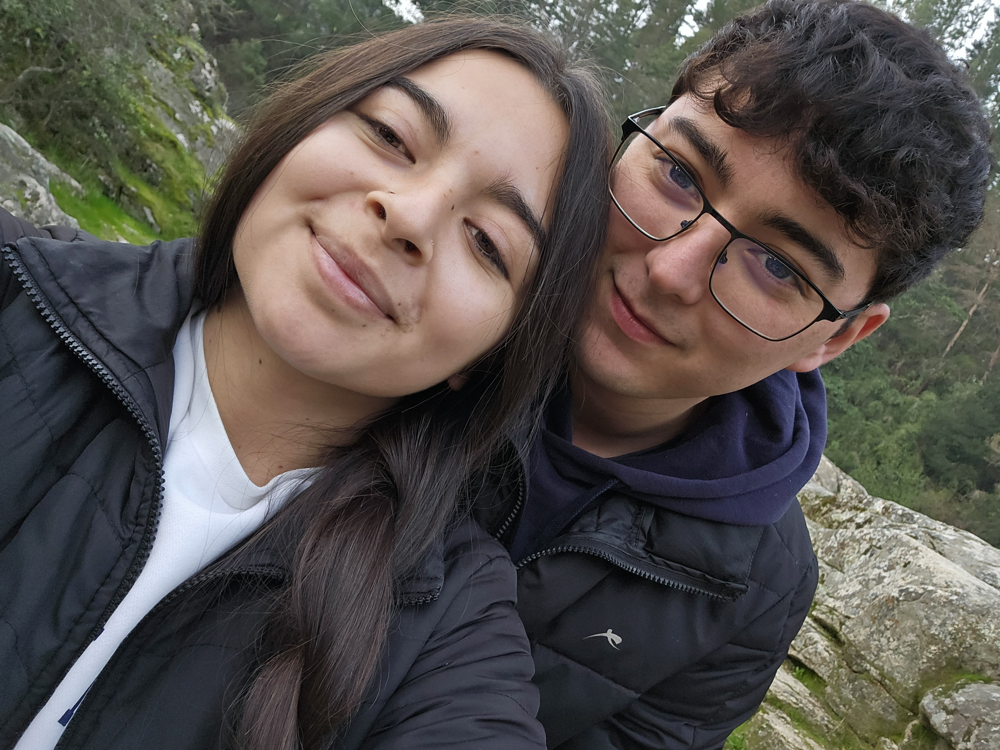
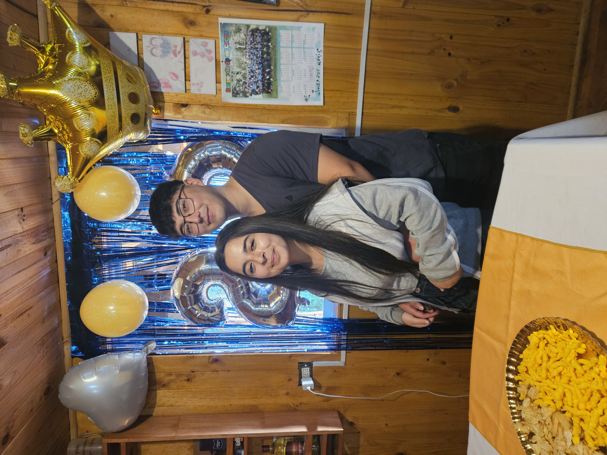
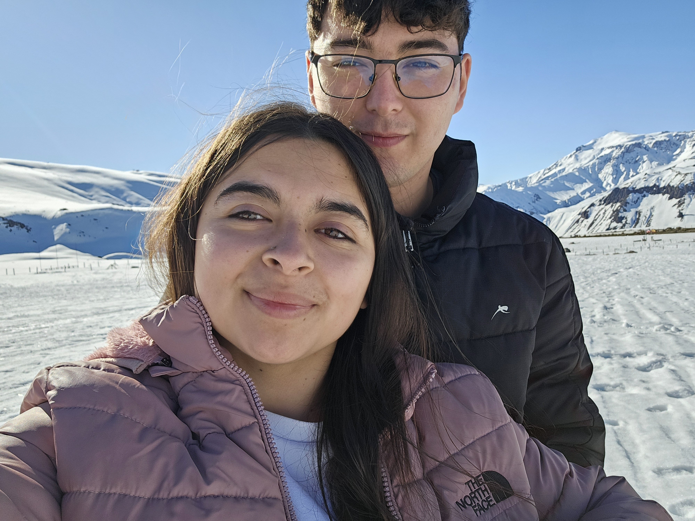
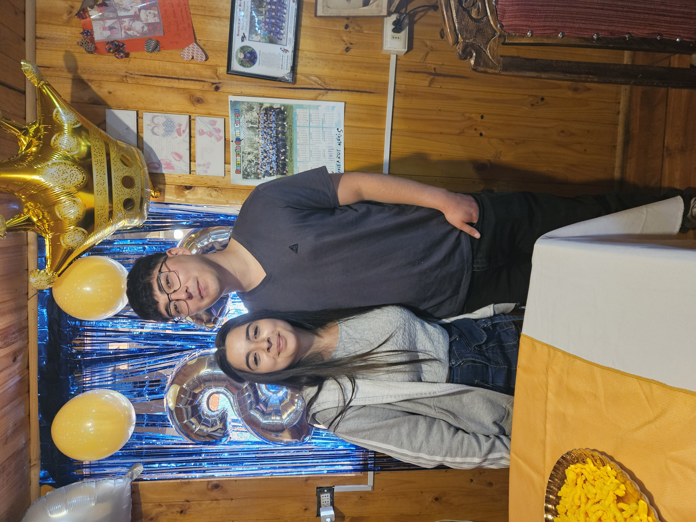
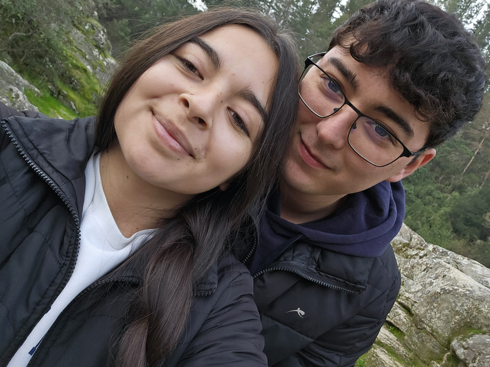
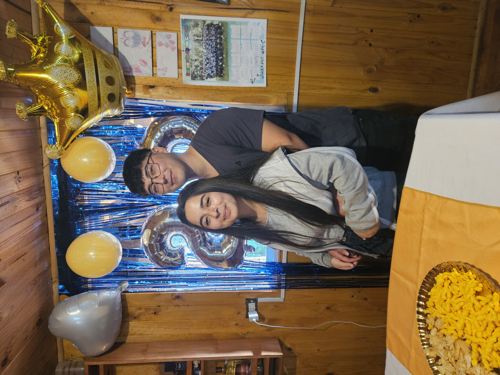
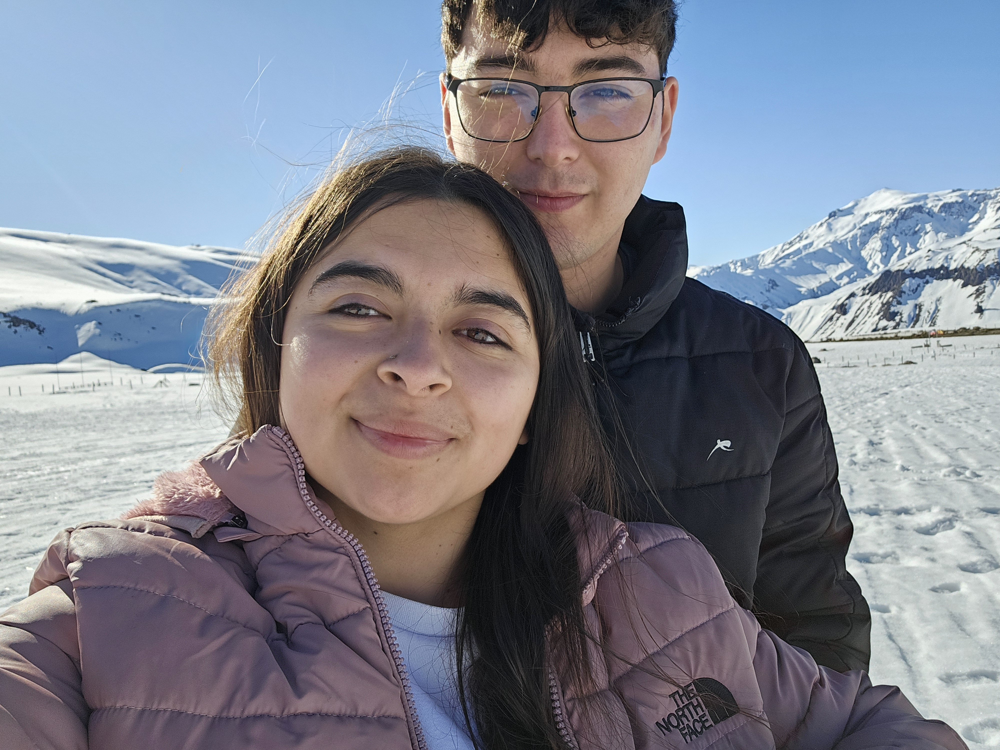

Para Ti ❤️
Han pasado 9 meses desde que nos conocimos, en donde un día normal terminó siendo muy importante. Todavía recuerdo la primera vez que nos vimos: tú estabas toda nerviosa, lo que provocó que yo también lo estuviera, pero al final mantuve la calma cuando fui a dejarte a tu casa. Recuerdo que ese día te di un abrazo fuerte al despedirnos, porque mi intención era darte a entender que me interesabas.
Después, cuando salimos ese fin de semana, me di cuenta de que eras la mujer que quería para mi futuro, a quien amaría, protegería y haría feliz. Y déjame decirte que no me arrepiento de nada, porque soy muy feliz a tu lado; me siento amado y querido.
Me gusta mucho pasar tiempo contigo porque puedo ser yo mismo y contarte cosas que a nadie más le he contado. Aunque hay cosas de mí que aún no sabes y quizás en algún momento de nuestras vidas te cuente, pero bueno, me desvié un poco de lo que quería expresarte. A tu lado encuentro la paz y la seguridad que no logro encontrar en mi día a día; haces que mi vida sea más tranquila, y eso para mí vale muchísimo. Gracias, mi vida, por hacerme sentir digno de merecer tu amor.
Me encanta la mujer que eres: tu forma de ser, de pensar, lo inteligente que eres y la manera en que me cuidas, estando pendiente de mí para que no me falte nada. Aunque a ti no te guste mucho que te trate de la misma manera porque dices que no estás acostumbrada, aun así lo seguiré haciendo y tratándote como mi princesa.
Lo que más me gusta de tu forma de ser es cuando ves a un bebé o a un niño y te quedas mirándolo, como si quisieras acercarte y jugar con él, o simplemente observar lo felices y tiernos que son. No sé exactamente qué sientes en ese momento, pero es algo que admiro de ti. Y quiero que sepas que cuando en nuestro futuro decidamos formar una familia, voy a intentar construir un entorno agradable para nuestros hijos y para nosotros, en donde seamos una familia feliz y unida.
Quiero que sepas que todo lo que diré a continuación lo digo de corazón: tú eres la mujer que siempre soñé tener, y haber coincidido contigo es algo por lo cual siempre estaré agradecido. Todo lo que te digo sobre construir un futuro juntos, un hogar y una familia, lo digo muy en serio, porque en ti encontré todo lo que necesitaba y mucho más. Siéntete orgullosa de la tremenda mujer que eres, porque lo que terminó enamorándome de ti no fue solo lo bella que eres, sino tu forma de ser, pensar y amar, además de que tenemos una forma muy parecida de ver la vida. Esa es la razón por la que estoy a tu lado y por la que quiero estar siempre, cuidando nuestra relación.
Para ir terminando, el regalo que te voy a dar es un compromiso: yo, tu novio, futuro esposo y padre de tus hijos, me comprometo a amarte, respetarte y hacerte la mujer más feliz. Quizás tengamos altos y bajos, pero siempre estaré a tu lado, incluso en los momentos más difíciles.
Te amo muchísimo, mi vida, ahora y siempre.
Atte. Tu bonito
Nuestros Momentos 📸
 






